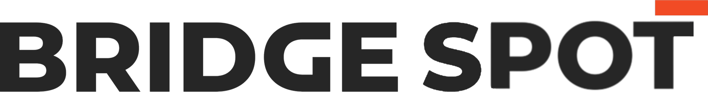

Autonomous operations. Intelligent insights. Safer outcomes.
Digital twin- Connection
- -
- Battery
- -
- Position
- -

Motors
-Power state
E-stop
-Safety chain
Lease
-Body control
Faults
-System health
Autonomous Inspection
Plan, execute and analyse autonomous inspections with advanced AI.
- Intelligent path planning
- Anomaly detection
- Automated reporting
Voice Control
Speak to Spot and run commands through the same control path as the manual dashboard.
“Connect to robot”
“Stand up”
“Dock”
Open Voice Control
Checking robot…